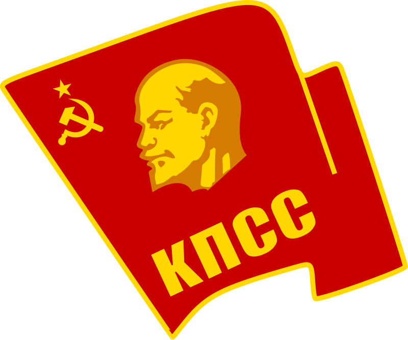

Communist Party of the Soviet Union (CPSU)
The ruling party in the Soviet Union from 1922 until its dissolution in 1991. Under leaders like Joseph Stalin, the CPSU pursued a highly centralized, authoritarian regime while promoting Marxist-Leninist ideals.